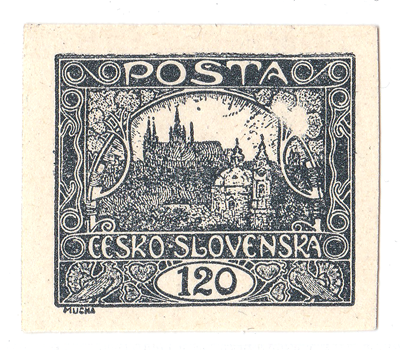
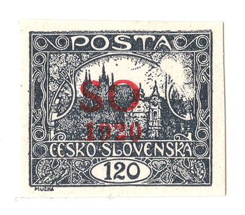
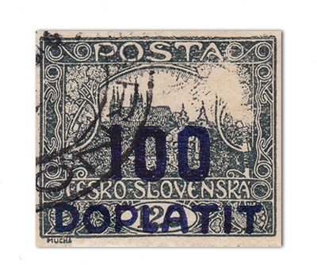
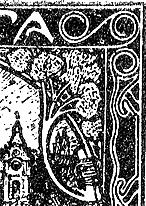
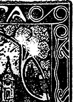
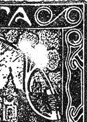
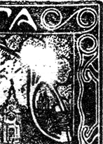
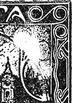

White spot at 6/2 of the 120h
While reconstructing the plates of the 120h I noticed a striking flaw at field 6 of the second plate – a large white spot in the ornament in the upper right corner.



The Monograph of Czechoslovak Stamps No. 1 mentions this white spot briefly. First I considered it important to know when printing of the 120h began. Let me quote an unusual definition – Jaroslav Lešetický's article in Filatelistická revue 10–11/1934:
“Printing of the 120-heller stamps began at ‘Unie' on 23 July 1919 on Augsburg press no. 2059, format VII of 1883. In a forme of four plates, one vertical half carried two plates of 120-heller stamps and the other two plates of 5-heller stamps of type IV. With this forme 200,000 sheets of 100 stamps of clean material were printed.
The 120h stamps were printed a second time on 1 August 1919, with the plate arrangement reversed; 7,600 sheets were printed. In total, therefore, 207,600 sheets were printed, i.e. 20,760,000 stamps.
The official name of the colour is black no. 809 of the firm Kast-Ehinger, Vienna. We philatelists distinguish the original fully black colour, the later blackish grey and exceptionally also light grey. Stamps of the first printing were put into service on 28 July 1919, the second printing gradually after 1 August 1919 together with the first. The 120-heller stamps were withdrawn on 30 April 1921. They are among the most finely printed stamps with the Hradčany design.”
The question, then, is when the flaw appeared – during the first printing or only during the second? In practice this means finding a stamp from this field with the white spot used between 28 July and 1 August 1919. So far my earliest postal use of a stamp with this flaw is from October 1919. (Many thanks to the colleagues who provided information and scans of 6/II from their collections!)
Dear reader, if you have postally used 120h 6/II stamps from the turn of July and August 1919, I would be very grateful for a scan!
Development of the flaw – the direction of the spot's growth is noticeable:





Literature: Lešetický – Filatelistická revue 10–11/1934